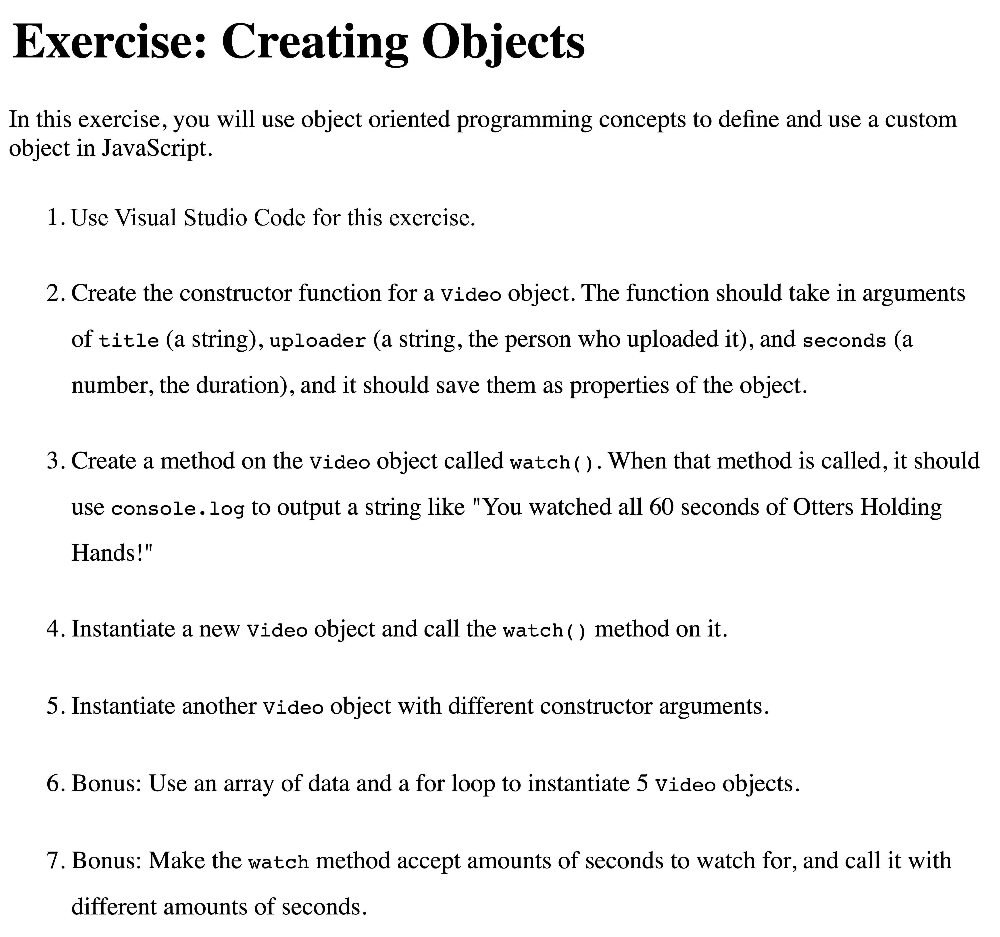

Object Oriented JavaScript
Object Oriented JavaScript
Review Study Guide
Click here to view and make a copy for reference.
What is Object Oriented JavaScript?
Let's break down those words by first reviewing objects.
What is an object? An object stores a lot of info about a thing.
What kind of info does an object have? It has keys and values.
Give an example of an object below.
//Type here
Objects form the basis of object oriented JavaScript.
Object Oriented JavaScript: Overview
Up to this point in time, we have explored how objects contain data, properties, and/or variables. We will build on this foundation.
In this unit, we will explore:
- state and behavior
- object constructors
- dynamic scope
- prototype and inheritance
Important Note
JavaScript is not really an object-oriented language (it is so much more!), but it has properties that helps it to operate like one. Objects are still critically important.
Formal Definitions of JS
We've reviewed the word "object" in Object Oriented JavaScript. Now let's take a closer look at JavaScript!
JavaScript is a high-level, interpreted programming language. It is a programming language that is characterized as weakly typed, and prototype-based.
JavaScript supports event-driven, functional, and imperative (including object-oriented and prototype-based) programming styles.
Let's Break it down
Take a look at terms
High-Level
- A programming language that is easy for a developer to understand.
- More readable for a human and less like "machine code" or binary.
- The language is good for developers but has to be translated for computers.
Take a look at terms
Interpreted
- The JavaScript engine is an interpreter that interprets JavaScript source code and executes the script accordingly.
- JavaScript is also compiled as it takes two "passes" through the code.
Take a look at terms
Weakly-typed
- In JavaScript, you don't have to declare the data type of a variable when you create the variable.
var x;You do in other languages! In Swift, for example:var x: String - In JavaScript, you can also change a variable's stored data type. For example,
var x = "Laura"and then later, you can runx = 3. You have changed the type, but JavaScript does not mind!
Take a look at terms
Event-driven
- Event-driven programming is a programming paradigm in which the flow of the program is determined by events.
- Events include user actions (mouse clicks, key presses), sensor outputs, or messages from other programs or threads.
- This is so important for JavaScript as it is the only programming language in the front-end for the web!
Take a look at terms
Object-Oriented and Prototype-based
- Object-oriented programming is a programming paradigm based on objects, their properties and methods.
- Protoype-based programming permits reuse of methods from objects based as prototypes.
- Good news! The above concepts are what we will cover in this unit!
Take a look at terms
In summary, JavaScript is:
- high-level, aka easy for developers to generate code.
- interpreted, aka easy for machines to execute the compiled code.
- weakly typed, aka easy for changing data type as needed.
- event-driven, aka easy for updating the UI based on events.
- functional, aka easy for functions to handle events and more.
- imperative, aka it can support object-oriented and prototype-based programming styles. More on this soon!
In other words, JavaScript is awesome and multi-purpose!
What is important about object oriented programming?
Software is a collection of cooperating objects rather than a collection of functions or simply a list of commands.
- An object contains state and behavior:
- state aka data, properties, variables
- behavior aka functions, methods, messages
Takeaway: Software is made up of objects that have properties and methods to handle state and behavior.
What does this really mean? Why do we care?
Objects are great because they contain DATA and FUNCTIONALITY.
- Think of a radio.
- A radio has properties like "made of metal", "has two buttons", "uses batteries", etc.
- A radio also has functionality, like "plays music", "displays time", "connects to bluetooth device", etc.
- What is another example that has properties and functionality?
As programmers, we like to control both data and functionality!
Objects
- We have used Objects for storing information.
- We have used dot notation to manipulate and access the information in objects.
- Remember that an object is a container for:
- values in the form of properties
- functionality in the form of methods
//Example of an object with properties
var dice = {
sides: 6,
color: "green"
};
Now how do we add functionality (or methods) to objects?
Adding Methods to Objects
Adding functionality to objects means adding functions.
Functions that are attached to objects are called methods.
So let's review functions by examining the function below.
//This is an example of a function. Please explain each line of code.
function diceRoll() {
var sides = 6;
var randomNumber = Math.floor(Math.random() * sides) + 1;
console.log(randomNumber);
}
On the next slide, we will take this function, drop its name, attach it to a key, and make it into a method in our object.
Adding Methods to Objects
Ta-da! The function declaration on the previous page has been transformed into a method here.
var dice = {
roll: function() {
var sides = 6;
var randomNumber = Math.floor(Math.random() * sides) + 1;
console.log(randomNumber);
}
};
How do you access the key of roll in this dice object?
Yes, use dot notation!
Now run dice.roll in the console. What do you notice?
So how do we execute the function? What syntax do we need? Let's confirm on the next slide.
Adding Methods to Objects
Given this same object from the previous slide...
var dice = {
roll: function() {
var sides = 6;
var randomNumber = Math.floor(Math.random() * sides) + 1;
console.log(randomNumber);
}
};
Now run dice.roll() in the console.
What do you notice?
Variable Scope in Objects
Now let's make sides a property of the dice object instead of a variable in the function, therefore changing the variable's scope. How would we refactor the code?
var dice = {
roll: function() {
var sides = 6;
var randomNumber = Math.floor(Math.random() * sides) + 1;
console.log(randomNumber);
}
};
After refactoring the code, how will you update the function so that the method runs properly?
Variable Scope in Objects
What is the benefit of having sides as a property
of the dice object?
var dice = {
sides: 6,
roll: function() {
var randomNumber = Math.floor(Math.random() * dice.sides) + 1;
console.log(randomNumber);
}
};
Now we can easily change the value of the property sides in our code to accommodate all kinds of dice!
How do you update the dice object to have 10 sides? dice.sides = 10;
Sharing Methods: An Intro
Sometimes, we want to share methods between objects.
Examples in daily life:
- Baseball: a player1 object may want to use player2 object's method of "slide" to slide into second base.
- Vehicle: a car object may want to use the "float" method from a boat object and the "fly" method from an airplane object.
- Toaster Oven: a toaster oven may want to use the "toast" method from a toaster object and the "bake" method from an oven object.
Sharing Methods: Toaster Oven
Sometimes, we want to share methods between objects.
For example, we want a toaster oven that combines the best methods of both worlds: the toaster and the oven.
var toaster = {
slots: 2,
time: 3,
toast: function() {
console.log("Ready to toast for " + toaster.time + " minutes.");
}
};
var oven = {
slots: 2,
time: 20,
bake: function() {
console.log("Ready to bake for " + oven.time + " minutes.");
}
};
Sharing Methods: An Example
Imagine an app that has 200 user objects. What are some basic features common to apps?
- add a profile pic
- add a tagline
- post/like/share an update
Wouldn't it be nice if addProfilePic, addTagline, postUpdate, likePost, etc. methods can be used by these 200 objects?
Now imagine each object containing each of the above methods, which means A LOT of repetitive lines of code!
On the next slide we will begin to solve this problem.
Remember Scope?
Functions can access the variables that are located locally within their scope.
Scope
So far, we have talked about
Now we are going to talk about
'this' keyword
JavaScript has an extremely powerful keyword - "this".
thiscan be used to access data contextually, allowing your functions and methods to access the data that they need based on execution context.- The
thiskeyword can be used to access values, methods, and other objects on a context-specific basis. - Meaning,
thiscan change based on where it is used.
More on 'this'
this always points to the object that it has been linked to.
var circle = {
radius: 2,
circumference: function() {
return Math.PI * 2 * this.radius;
}
}
console.log(circle.circumference()); // 12.566370614359172
//'this' is referring to 'circle' object.
Let's make another object that has a bigger radius.
var biggerCircle = {
radius: 4
};
Using dot notation, how do we create a circumference method for this bigger circle object? See next slide. 😊
'this' continued
var biggerCircle = {
radius: 4
};
biggerCircle.circumference = circle.circumference;
Let's console.log the circumference of the bigger circle.
console.log(biggerCircle.circumference()); // 25.132741228718345
//What is happening above?
The this in the circumference method is now referencing the radius of the bigger circle object!
this allows one function (method) to operate on many states (instances).
Another Example
var portland = {
name: "Portland",
bridges: 12,
airport: 1,
soccerTeams: 1,
logNumberOfBridges: function () {
console.log ("There are " + this.bridges + " bridges in " + this.name);
}
}
portland.logNumberOfBridges();
'this'
this is an identifier that gets a value bound to it, much like a variable. Ex: this.property, .call(this, param)
Instead of identifying the values explicitly in your code block, this gets bound to the correct object automatically.
this is so helpful for methods.
Think of this as a pronoun.
What is the output of this code?
var person = {
firstName: "Penelope",
lastName: "Barrymore",
getName: function () {
return this.firstName + " " + this.lastName;
}
}
console.log(person.getName());
Brainstorm
- What should you do if you want to create a lot of objects with some of the same keys/properties but different values?
- EX: You are working at Facebook and want to be able to store the same type of information about all your users.
Object Literal vs Object Constructor
- Object literals define an object literally:
var myDog = {
username: 'coach',
age: '1'
}
Object Constructor Properties
- Describes how an object should be created (example: dog).
- Each object created is known as an instance of that object type (example: coach).
- Calling the constructor object to create an instance is called instantiation.
Object Constructor Example: Dog
Let's create an object constructor based on this object literal:
var myDog = {
username: 'coach',
age: '1'
}
Because constructor functions are functions that when called create new instances of an object, what keyword will we use to create one? function
function
Object Constructor Example: Dog
Let's create an object constructor based on this object literal:
var myDog = {
username: 'coach',
age: '1'
}
Constructor functions must have names in capital case (first letter of each word capitalized).
To create instances that are all dogs, what word is best to name this function? Dog
function Dog() {
}
Object Constructor Example: Dog
Let's create an object constructor based on this object literal:
var myDog = {
username: 'coach',
age: '1'
}
Because we want our constructor function to have 2 properties (username and age), what must we pass into the constructor function?
function Dog(username, age) {
}
Object Constructor Example: Dog
Let's create an object constructor based on this object literal:
var myDog = {
username: 'coach',
age: '1'
}
Constructor functions create objects (has properties, values).
So after passing parameters into the function, in its code we need info about the instances' properties and values.
function Dog(username, age) {
propertyName1 = username; //value of username stored in a property name
propertyName2 = age; //value of age stored in a property name
}
Object Constructor Example: Dog
Let's create an object constructor based on this object literal:
var myDog = {
username: 'coach',
age: '1'
}
Values will change based on what is passed into the function.
However, property names stay the same.
The this keyword is useful for running functions contextually.
So we use this before the dot notation to insert properties for instances of Dog.
function Dog(username, age) {
this.username = username;
this.age = age;
}
Object Constructor Example: Dog
var myDog = {
username: 'coach',
age: '1'
}
In order to call the Dog function to give us an instance of Dog (instantiate) that looks like the above object literal, we must use the keyword new.
After the keyword, we will call the Dog function, passing in the values of "coach" and "1" respectively.
We will store this information into a variable called myDog.
function Dog(username, age) {
this.username = username;
this.age = age;
}
var myDog = new Dog('coach', '1');
Object Constructor Example: Dog
Subsequent instantiations can now be made with one line of code!
function Dog(username, age) {
this.username = username;
this.age = age;
}
var myDog = new Dog('coach', '1');
Instantiate and store the information in a variable called yourDog.
var yourDog = new Dog('archie', '2');
Next slide: A recap on object literals and object constructors.
Object Literal vs Object Constructor
Object Literal
var flower = {
color : "red",
petals : 32,
smellsPretty : true
};
Constructor Object
function Flower(color, petals, smell){
this.color = color;
this.petals = petals;
this.smellsPretty = smell;
}
var myNewFlower = new Flower('red', 32, true);
Creating a user-defined object requires two steps:
- Define the object type by writing a
functionthat utilizesthisin its code block. - Create an instance of the object with
new.
Example:
//Defines the new object
function Contact(name, email) {
this.name = name;
this.email = email;
}
//Creates the new instance
var myContact = new Contact('Laura', 'laura@hello.com');
Important: the name of the function is capitalized so you know it is a constructor!
What would the name value be in myContact?
console.log(myContact.name);
What would the name value be in myOtherContact?
function Contact(name, email) {
this.name = name;
this.email = email;
}
//Creates the new instance
var myOtherContact = new Contact('Hubs', 'hubs@hello.com');
console.log(myOtherContact.name);
var myContact = new Contact('Laura', 'laura@hello.com');
- Keyword new turns a regular function into a constructor function.
- And returns a new instance of the Contact object, myContact.
- This is called instantiation.
Can you think of other specific times when you would need to use an object constructor?
Let's Review "new"
- Creates a new Object.
- Creates and binds a new
this to that object.
- It sets this new object's
prototype property to be the constructor function's prototype object.
- It executes the constructor function.
- It returns the newly created object.
this to that object.prototype property to be the constructor function's prototype object.Animal Exercise
Given the following code:
function Animal(species, noise) {
this.species = species;
this.noise = noise;
this.makeNoise = function() {
console.log(this.noise + ", " + this.noise);
}
}
How would you create an instance of an Animal?
Todo List Exercise
How would you describe a task in a todo list. Your task should have:
- A description of the task.
- An attribute to define if the task is done.
- A method to call when it is done.

Solution
function TodoListItem(description) {
this.description = description;
this.isDone = false;
this.markAsComplete = function() {
this.isDone = true;
}
}
var task = new TodoListItem("Do the laundry!");
Question
What kind of objects you might need for your new Social Media site?
What would be the properties on those objects?
How do we add a method to a constructor?
If we run this code over and over again (to create new instances):
function City (name, nickname) {
this.name = name;
this.nickname = nickname;
this.slogan = function () {
console.log(this.name + " is the best city in the country!");
};
}
var sanFrancisco = new City("San Francisco", "City By The Bay");
Every time we create an object, the program runs the code, and a new anonymous function is created again and again.
More code in your program means more space used in the computer’s memory.
How do we solve this problem?
Use 'prototype'!
We can add a method onto this object constructor by using prototype.
function City(name, nickname) {
this.name = name;
this.nickname = nickname;
}
City.prototype.slogan = function(){
console.log(this.name + " is the best city in the country!");
}
var sanFrancisco = new City("San Francisco", "City By The Bay");
sanFrancisco.slogan();
Another Example
function Circle(radius) {
this.radius = radius;
}
Circle.prototype.circumference = function() {
return Math.PI * 2 * this.radius;
}
Circle.prototype.area = function() {
return Math.PI * this.radius * this.radius;
}
var circle = new Circle(2);
circle.radius; // this is 2; it's stored on the circle
circle.area; // this is a function; it's stored on Circle.prototype
circle.area(); // this is a function call; inside it, "this" points to the circle
More on prototype!
A constructor function makes an object linked to its own prototype
function Greeter(who) {
this.me = who;
}
Greeter.prototype.identify = function (){
return "I am " + this.me;
};
var person1 = new Greeter("Alice");
var person2 = new Greeter("Bob");
person1.constructor === Greeter; //true
person1.constructor === person2.constructor; //true
Let's explore the code in Codepen.
Time for some whiteboard diagram drawing!
Prototype Chain
The Animal Constructor inherits properties/methods of the Global Object. The Dog Constructor extends the Animal Constructor. Lassie is an instance of the Dog Constructor. Lassie inherits properties/methods of both Constructors: Animal, Dog.
The magic of prototype and this!
function Greeter(who) {
this.me = who;
}
Greeter.prototype.identify = function() {
return "I am " + this.name;
};
Greeter.prototype.speak = function() {
alert("Hello, " + this.identify() + ".");
};
var person1 = new Greeter("Alice");
person1.speak():
thiscan be thought of as "dynamic scope" (as opposed to lexical scope like global and local scope)thistells us which building to go into, or which address of the building downtown to go intoprototypetells us how we are going to find properties if they don't exist on the direct object
A helpful diagram

- Objects can inherit properties/methods of other objects
- Objects can implement parent methods in different ways
Check out this Codepen.
How do we help our objects extend to access more methods?
The object constructor will need .call() to handle the properties.
The prototype of the object constructor will need Object.create() to handle the methods.
Using .call()
Let's review the documentation.
Notice that this needs to passed into .call() with the property name of another object constructor.
function Greeter(who) {
this.me = who;
}
Greeter.prototype.identify = function(){
return "I am " + this.me;
}
//.call() with "this" and a property of Greeter passed in
//will allow Bar to access Greeter's "who" property.
function Bar(who) {
Greeter.call(this,who);
}
Using Object.create()
Let's review the documentation.
Notice the prototype of an object constructor is passed into Object.create() to handle methods of another object constructor.
Object.create(Greeter.prototype);
The function's execution is assigned to the prototype of another object constructor:
Bar.prototype = Object.create(Greeter.prototype);
Bar Prototype extends Greeter Prototype
The Bar Constructor can now have a method that uses Greeter's "identify" method.
alert("Hello, " + this.identify() + ".");
Assigning the above code block to a method of Bar Constructor's prototype allows instances of Bar to access methods of Bar and Greeter.
Bar.prototype.speak = function (){
alert("Hello, " + this.identify() + ".");
}
Instances of Bar (aka Customers)
How do we make instances of Bar (e.g., customers)?
function Greeter(who) {
this.me = who;
}
Greeter.prototype.identify = function(){
return "I am " + this.me;
}
function Bar(who) {
Greeter.call(this,who);
}
Hint: Bar accepts one parameter.
var customer1 = new Bar("Viola");
var customer2 = new Bar("Jamie");
The Bar Constructor has a speak method. How do you call it for customer1?
customer1.speak();
Accessing Methods Between Objects
What do we expect to see when we run the last line of code?
function Greeter(who) {
this.me = who;
}
Greeter.prototype.identify = function(){
return "I am " + this.me;
}
function Bar(who) {
Greeter.call(this,who);
}
Bar.prototype = Object.create(Greeter.prototype);
Bar.prototype.speak = function (){
alert("Hello, " + this.identity() + ".");
}
var customer1 = new Bar("Viola");
var customer2 = new Bar("Jamie");
customer1.speak();
What just happened?
- We wanted to create a child function called Bar that is supposed to inherit from or EXTEND the parent function.
- aka we need Bar's
prototypeto extend Greeter'sprototypeso that Bar can link to Greeter's methods. - We used:
- .call() for property inheritance
- Object.create for method inheritance
Another example
// The constructor function
function Paperback(title, author, numPages, cover) {
Book.call(this, title, author, numPages);
this.cover = cover;
}
// Extending the Book object
Paperback.prototype = Object.create(Book.prototype);
// A new method on this object
Paperback.prototype.burn = function() {
console.log("Omg, you burnt all " + this.numPages + " pages");
this.numPages = 0;
}
// Instantiating a new object
var paperback = new Paperback("1984", "George Orwell", 250, "cover.jpg");
paperback.read();
paperback.burn();

Video Exercise

Review Exercise
Exercise: eFarmony
Click here and do in Visual Studio Code
Object-Oriented JavaScript Roundup
Click here to review.
THE END
Thank you for your attention!